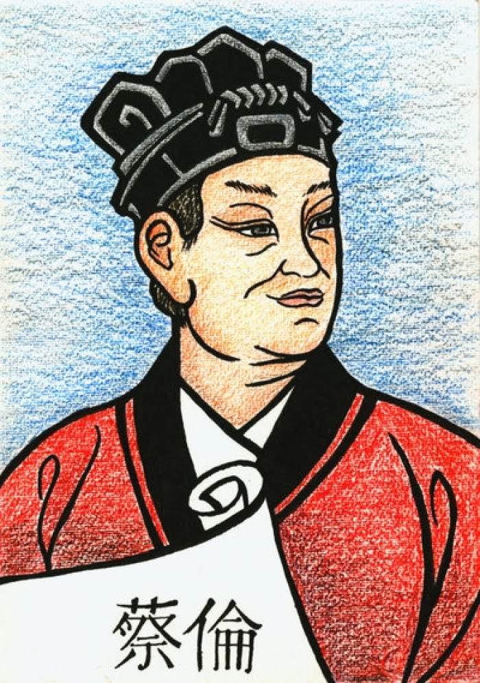

Source: PrabookOut of the Four Great Inventions of China - gunpowder, compass, paper, and printing, paper is the only one whose inventor's name has not been forgotten. Printing and note taking were done on sheets of bamboo, which were troublesome to write on and carry around. Asian alternatives such as silk and cloth and European alternatives such as parchment were too expensive. Cai Lun's method of beating tree bark into a pulp and mixing it with water was inexpensive, extremely efficient, and would result him being worshipped as a god after his death.
The process, over hundreds of years, spread to Japan through Korea and to Europe through Arabian trade. Many cite Johannes Gutenberg's invention of the printing press an indispensable milestone in the progression of human communication and unity, but if he is the prince of communication, then Cai Lun must be the king.
The applications of paper do not have to be explicity listed in its entirety: how many hundreds of years would humanity be behind if Cai Lun had not made his breakthrough? In the present day, with our iPads and laptops aiding us in taking notes in class, many still choose to use pen and paper, an invention dating back over a millenia.